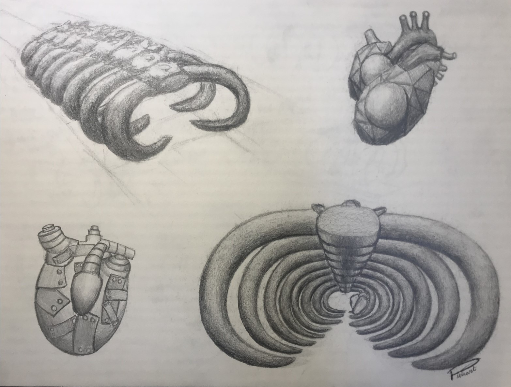

Anatomy Study
- Medium
- Graphite
The sculpture, The Anatomy of a Hug by Luna Lu, and the Lion King elephant graveyard inspired me to anatomy as sculptural elements. After using multiple pages of my sketchbook devoted to ideation, I settled on a train platform inspired by a ribcage.
